События
Время от времени поле подкидывает короткое испытание — событие. Их четыре вида: ВОРОТА, РЕЛЕ, ГОРЯЧАЯ ЗОНА и ПРОВОД ПОД ТОКОМ, и у каждого есть варианты. Выигранное событие приносит очки и заряд и открывает выбор модуля.
Когда приходят события
- Первое событие начинается после 95 шагов (около 14,2 с) свободной игры.
- Между событиями — 95–140 шагов свободной игры. Пауза сокращается на 6 шагов с каждым пройденным событием, но не меньше 70. Если событие закончилось, когда у тебя было ×5 или больше, добавляется ещё 18 спокойных шагов.
- Событие не начинается, пока ты внутри щели, а новые конструкции появляются не ближе 4 клеток от головы и никогда прямо у тебя на пути. Если поле слишком забито, событие чуть ждёт и пробует снова.
- Название, прогресс и таймер события — в полосе под шкалой. При первой встрече с каждым видом игра показывает карточку с объяснением.
- Если время вышло, событие просто кончается без награды. Конструкции исчезают вместе с событием (стойки реле держатся ещё немного).
Какое событие (на рекорд и испытание дня)
Виды тянутся из перемешанного мешка, который не выдаёт один вид дважды подряд. ПРОВОД ПОД ТОКОМ добавляется только после первых 2 событий. Сложные варианты открываются с ростом интенсивности забега — это число уже пройденных событий плюс один, пока у тебя ×5 и выше. В таблицах ниже — с какой интенсивности доступен вариант и его вес при выборе. Уровни кампании задают события и варианты явно (см. все уровни).
Сверху могут добавиться модификаторы (в забеге на рекорд и Испытании дня — случайно, по таблице; если модификатор указан у уровня кампании, он стоит на каждом подходящем событии):
| Модификатор | Для | С интенсивности | Шанс | Что делает |
|---|---|---|---|---|
narrow | ВОРОТА | 4 | 30 % | каждая дверь на клетку глубже (максимум 4) |
drift | ВОРОТА | 5 | 30 % | ворота сдвигаются вбок на клетку каждые 7 шагов (ПЛАВАЮЩИЕ ВОРОТА) |
fast | ПРОВОД ПОД ТОКОМ | 5 | 40 % | провод движется каждые 2 шага вместо 3 |
ВОРОТА

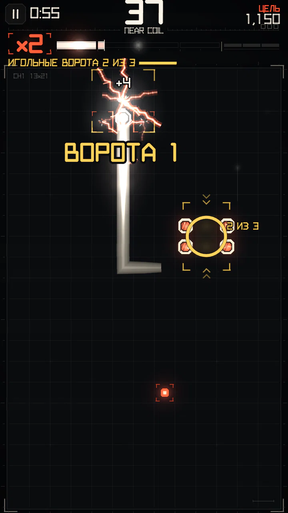

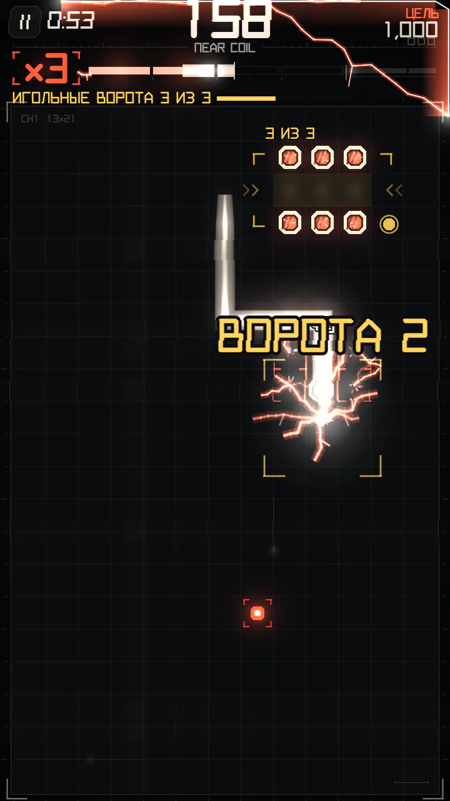

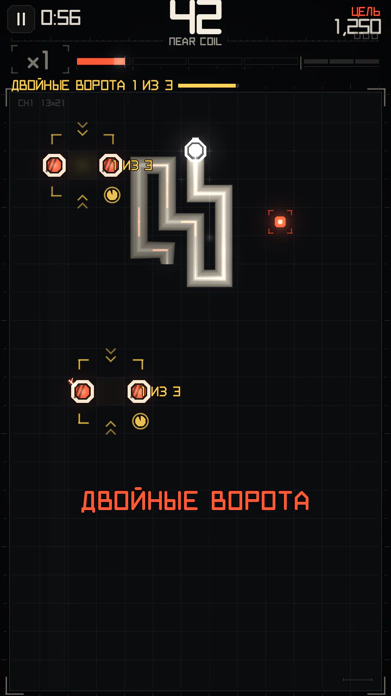

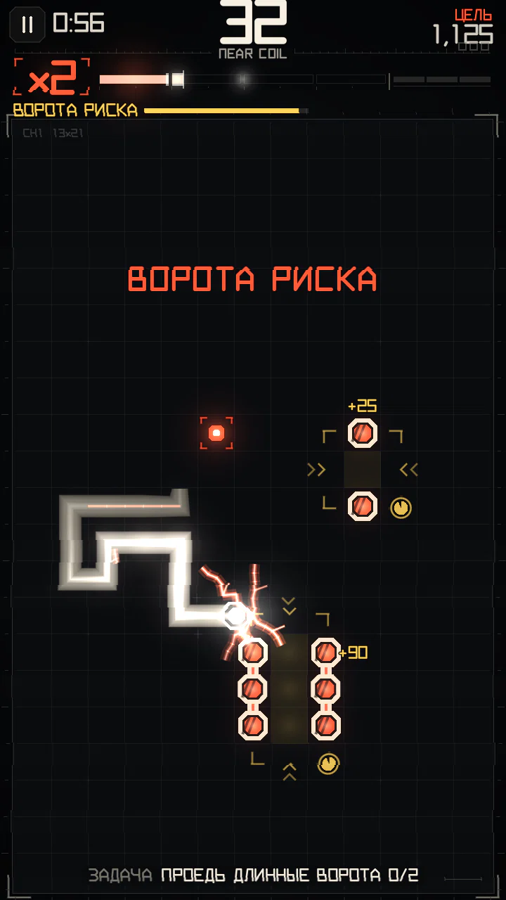
Ворота — это дверь (прямой проход длиной 1–4 клетки) и смертельный столб с каждой стороны от каждой клетки двери. Чтобы пройти ворота, въедь в дверь и выедь с другой стороны насквозь, не поворачивая внутри. Направление любое. Длина двери — её глубина; глубокие двери платят больше.
- Каждые ворота нужно пройти за 85 шагов (около 12,8 с); для следующих ворот серии таймер начинается заново.
- Новая дверь появляется в 4–11 клетках от головы. Столб никогда не ставится на твою линию ближе 6 клеток впереди и на соседние линии ближе 2 клеток.
- Столбы — проводники: проход впритирку к ним — сближение (оплачивается полностью), проезд между ними — тесные шаги. Щель из одних столбов манёвром не считается — за неё платят ворота.
| Ворота в серии | 1-е | 2-е | 3-и |
|---|---|---|---|
| Глубина двери | 1 | 2 | 3 |
| Очки (× множитель) | 30 | 60 | 120 |
| Заряд | 60 | 90 | 130 |
Варианты
| Вариант | На экране | С интенсивности | Вес | Что меняется |
|---|---|---|---|---|
course | ИГОЛЬНЫЕ ВОРОТА | 0 | 4 | трое ворот подряд, двери глубиной 1, 2 и 3 клетки |
chain | ЦЕПЬ ВОРОТ | 1 | 3 | следующие ворота встают в 3–8 клетках прямо за выходом из прошлых |
risk | ВОРОТА РИСКА | 2 | 3 | мелкая и глубокая дверь; засчитывается только первая, в которую проехал |
double | ДВОЙНЫЕ ВОРОТА | 3 | 2 | две двери сразу, подойдёт любая |
echo | ВОРОТА-ЭХО | 3 | 2 | одни ворота: туда, обратно и снова туда |
- ВОРОТА РИСКА: мелкая дверь (глубина 1) — +25 очков и 40 заряда; глубокая (глубина 3) — +90 очков и 200 заряда. Первая пройденная дверь заканчивает событие.
- ВОРОТА-ЭХО: одна дверь глубиной 2, её надо пройти 3 раза — туда, обратно и снова туда, каждый раз за 60 шагов. Проходы платят 40, 70, 110 очков и 70, 100, 150 заряда. Уже один проход — победа, остальное — бонус.
- ЦЕПЬ ВОРОТ: следующие ворота встают в 3–8 клетках прямо перед местом, где ты вышел из прошлых, на одной линии с выходом.
РЕЛЕ

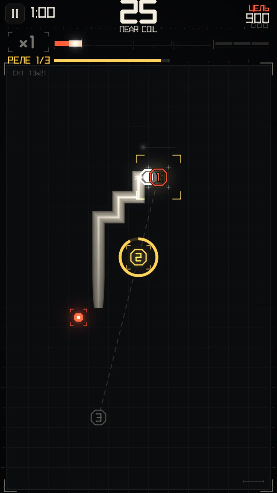

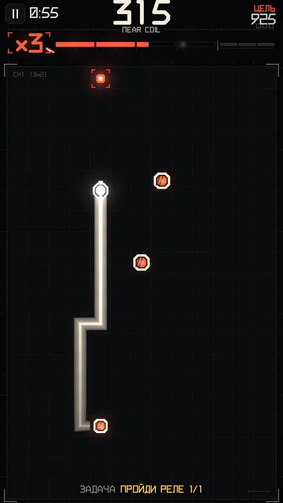

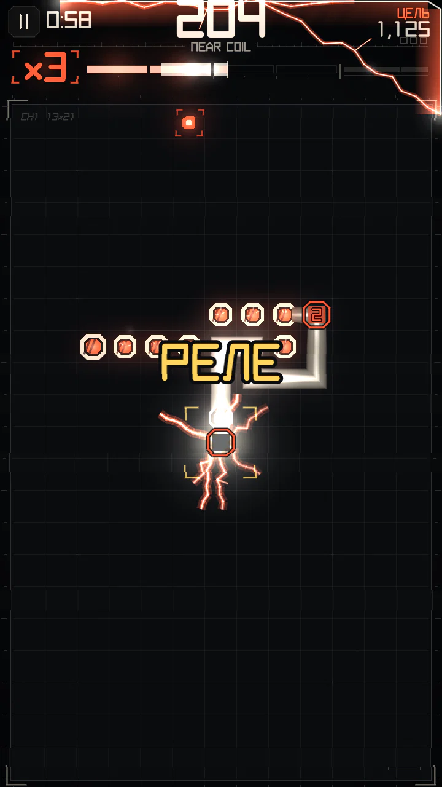
По полю расставляются пронумерованные клеммы, не ближе 5 клеток друг к другу. Проведи по ним голову по порядку номеров, пока не вышло время.
- Время: 135 шагов (около 20,2 с) на три клеммы и ещё 35 шагов на каждую следующую.
- Каждая клемма: +15 очков (× множитель) и +30 заряда.
- Завершение: +90 очков и минимум 120 заряда — всегда достаточно, чтобы дойти до следующего множителя (пока ты ниже ×5). Сложные варианты (четыре клеммы, быстрое, тёмное, живое) платят за завершение ×1,50.
- Тронутая клемма становится живой стойкой, как только с неё ушло тело: врезаться нельзя, а для сближений годится. Стойки держатся 70 шагов (около 10,5 с) после конца реле (110 с мостом).
Варианты
| Вариант | На экране | С интенсивности | Вес | Что меняется |
|---|---|---|---|---|
three | РЕЛЕ | 0 | 4 | три клеммы по порядку номеров |
timed | БЫСТРОЕ РЕЛЕ | 2 | 2 | две трети времени, больше награда |
four | РЕЛЕ 4 | 3 | 2 | четыре клеммы, больше времени, больше награда |
hidden | ТЁМНОЕ РЕЛЕ | 3 | 2 | последняя клемма видна, только когда до неё очередь |
bridge | РЕЛЕ-МОСТ | 4 | 2 | после завершения клеммы соединяются шинами под током |
moving | ПОДВИЖНОЕ РЕЛЕ | 5 | 2 | последняя клемма смещается каждые 6 шагов |
ГОРЯЧАЯ ЗОНА

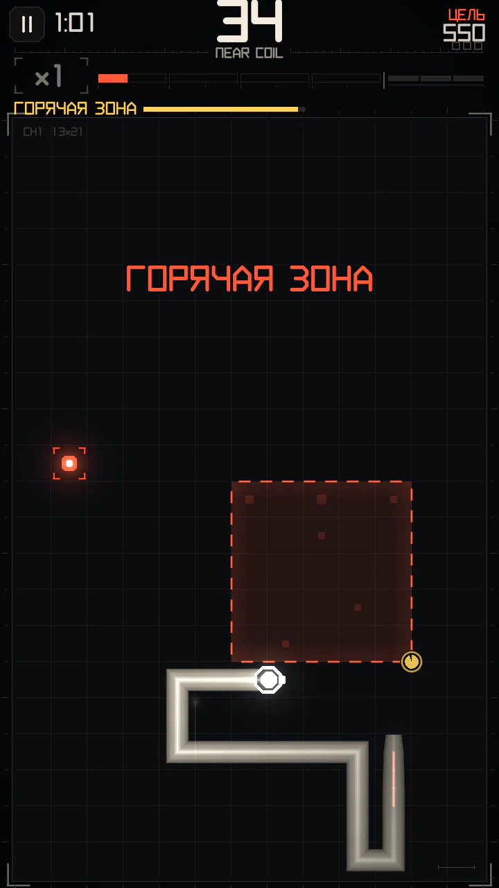

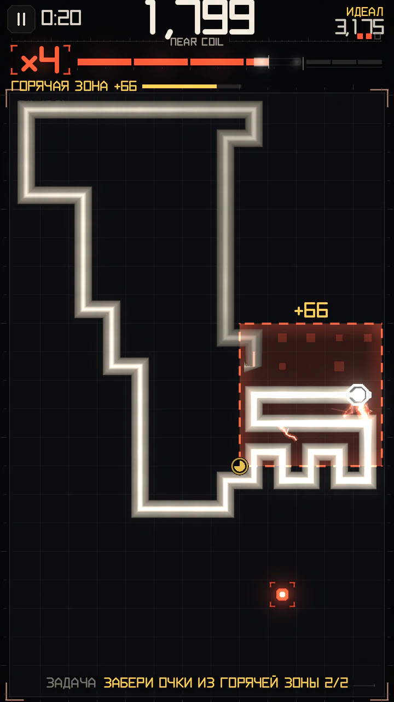

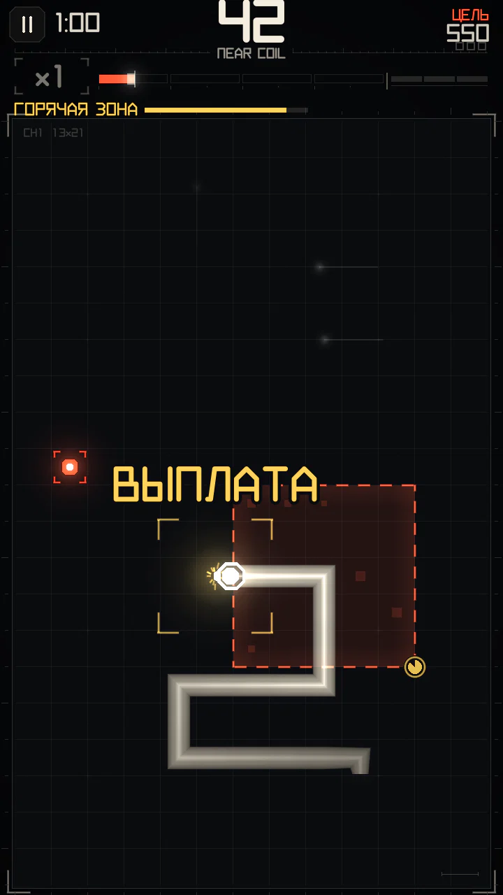
Квадрат 5×5. Пока голова внутри, заряд и очки копятся; выйди из квадрата, чтобы забрать их (ВЫПЛАТА). Входить и выходить можно несколько раз. Если зона перегреется, когда голова ещё внутри, накопленное сгорает (СГОРЕЛО).
- Зона живёт 84 шага (около 12,6 с); последние 18 шагов — предупреждение.
- Каждый шаг внутри копит 2, 3, 4, 6 заряда (растёт по четвертям срока зоны) и 2 очка.
- Всё, что ты зарабатываешь внутри, начисляется как обычно, и ещё 50 % от этого откладывается в копилку.
- В зоне сближения заряжают полностью на любом множителе, и голод не действует.
- Накопленные очки умножаются на множитель в момент выплаты. Событие засчитано, когда ты забрал в сумме не меньше 70 заряда.
Варианты
| Вариант | На экране | С интенсивности | Вес | Что меняется |
|---|---|---|---|---|
static | ГОРЯЧАЯ ЗОНА | 0 | 4 | обычная зона |
escalate | РАСТУЩАЯ ЗОНА | 2 | 2 | живёт дольше, во второй половине копит вдвое быстрее |
drift | ПЛАВАЮЩАЯ ЗОНА | 3 | 2 | плывёт по диагонали, на клетку каждые 9 шагов |
shrink | СЖИМАЮЩАЯСЯ ЗОНА | 3 | 2 | к середине срока сжимается до 3×3 |
preserve | ЗОНА УДЕРЖАНИЯ | 4 | 2 | пока голова внутри, заряд не утекает |
unstable | НЕСТАБИЛЬНАЯ ЗОНА | 5 | 2 | случайный срок жизни, предупреждение в самом конце |
РАСТУЩАЯ ЗОНА живёт 100 шагов и во второй половине копит вдвое быстрее. НЕСТАБИЛЬНАЯ ЗОНА живёт 66–96 шагов и предупреждает всего за 7 шагов.
ПРОВОД ПОД ТОКОМ

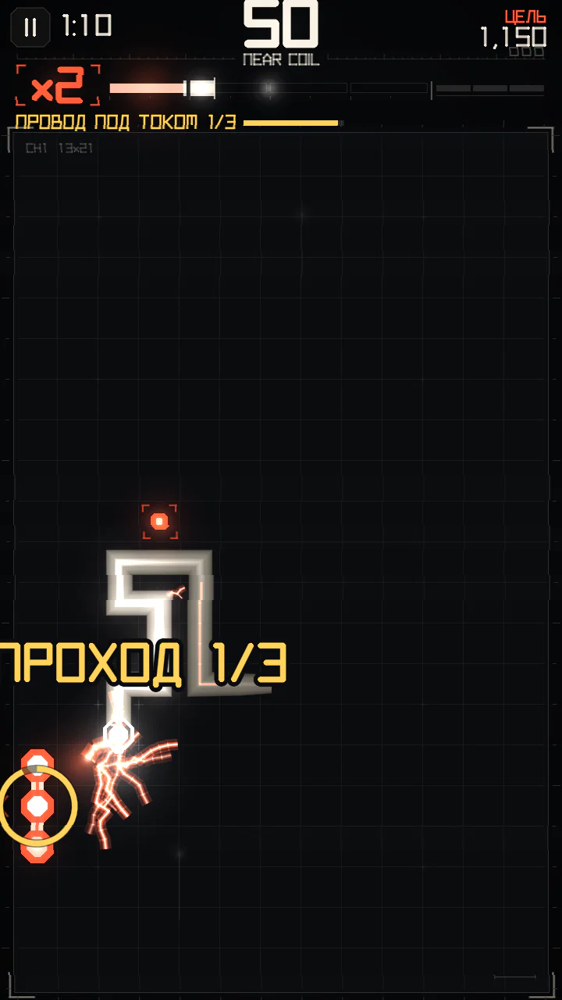
Смертельная шина длиной 3 клетки ездит туда-сюда по своей полосе, на клетку каждые 3 шага. Пройди впритирку к ней 3 раза за 140 шагов (около 21 с). Касание — конец забега.
- Проходы засчитываются не чаще чем раз в 5 шагов.
- Каждый проход: +25 очков (× множитель) и +45 заряда; победа над проводом: +100 очков и +110 заряда.
- Провод никогда не въезжает в голову или вплотную к ней и не встаёт на 3 клетки прямо перед ней.
Варианты
| Вариант | На экране | С интенсивности | Вес | Что меняется |
|---|---|---|---|---|
patrol | ПРОВОД ПОД ТОКОМ | 0 | 4 | одна шина в 3 клетки |
long | ПРОВОД ПОД ТОКОМ | 3 | 2 | одна шина в 5 клеток |
twin | ПРОВОД ПОД ТОКОМ | 4 | 2 | две шины, у каждой своя полоса |